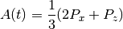
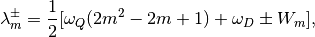
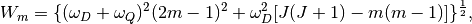

Time dependence of the polarization function for a static muon interacting with nuclear spin [1].

,where
![P_z(t) = \frac{1}{2J+1}\left\{1+\sum^J_{m=-J+1}[\cos^2(2\alpha_m)+\sin^2(2\alpha_m)\cos(\lambda^+_m-\lambda^-_m)t]\right\},](../../_images/math/ca87a2ce78b8dd64d57a315af15350625dedf912.png)



![tan(2\alpha_m)=\frac{\omega_D[J(J+1)-m(m-1)]^\frac{1}{2}}{(1-2m)(\omega_D+\omega_Q)},](../../_images/math/1a0870866e2c6c4297e5cabecf74ee0c627a36fc.png)
 is the angular frequency due to dipolar coupling,
is the angular frequency due to dipolar coupling,
 is the angular frequency due to quadrupole interaction of the nuclear spin
is the angular frequency due to quadrupole interaction of the nuclear spin  due to a field gradient exerted by the presence of the muon,
due to a field gradient exerted by the presence of the muon,
is the total angular momentum quantum number,
and  is the z-component of the total orbital quantum number.
is the z-component of the total orbital quantum number.
(Source code, png, hires.png, pdf)

| Name | Default | Description |
|---|---|---|
| A0 | 0.5 | Amplitude |
| FreqD | 0.01 | Frequency due to dipolar coupling (MHz) |
| FreqQ | 0.05 | Frequency due to quadrupole interaction of the nuclear spin (MHz) |
| Spin | 3.5 | J, Total angular momentum quanutm number |
| Sigma | 0.2 | Gaussian decay rate |
| Lambda | 0.1 | Exponential decay rate |
Categories: FitFunctions | Muon\MuonSpecific
{kind=link}
{kind=link}